Admin Panel Overview
Familiarize yourself with the osTicket admin interface. This is where all configuration and ticket management happens.
Navigate to Admin Dashboard
Access and explore the main admin interface
Admin Panel URL
Access the admin panel at:
Log in with the admin credentials you created during installation.
Main Menu Sections
The admin panel is organized into core several main sections:
| Section | Purpose |
|---|---|
| Dashboard | Provides a real-time overview of system activity including ticket statistics, agent performance, and system health indicators. |
| Settings | Configure global system preferences such as helpdesk settings, ticket options, authentication methods, and system-wide configurations. |
| Manage | Manage helpdesk structure including departments, SLA plans, help topics, ticket filters, and workflows. |
| Emails | Configure email settings including email addresses, incoming/outgoing mail servers (IMAP/SMTP), and automated email fetching. |
| Agents | Manage staff accounts, assign roles and permissions, organize teams, and control access levels within the helpdesk. |
| Dashboard (Agent Panel) | Agent-side interface used by support staff to view, respond to, assign, and manage support tickets efficiently. |
Screenshot: Admin Dashboard
Displays system logs and key osTicket information for monitoring platform activity.
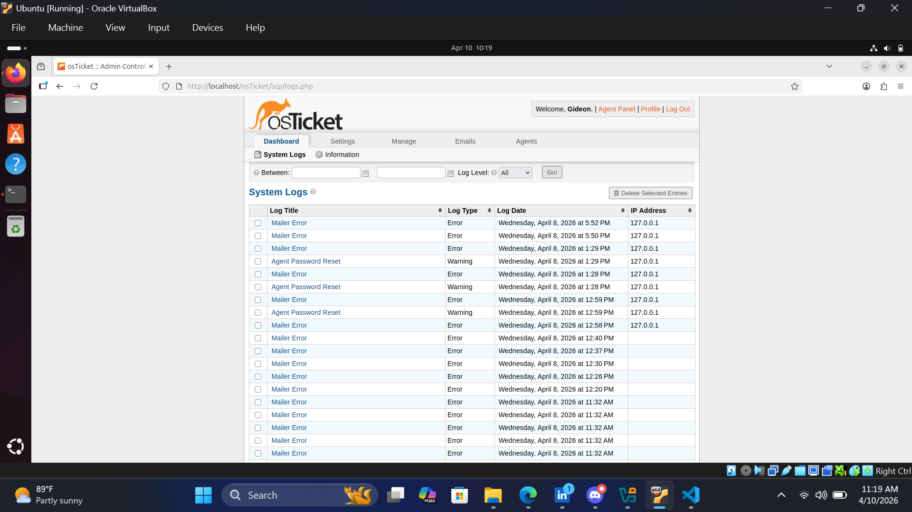
Screenshot: Settings Navigation
Main configuration menu showing system settings and options.
Email Configuration
Set up email integration so osTicket can send and receive emails. This is critical for automated notifications and customer communication.
Configure Outgoing Email (SMTP)
Set up email sending for notifications and responses
Access Email Settings
Navigate to: Email → Email Addresses → Outgoing Email (SMTP)
SMTP Configuration Example
Fill in the following SMTP details. Example using Gmail:
| Setting | Value (Gmail Example) | Notes |
|---|---|---|
| SMTP Host | smtp.gmail.com | Or your email provider's SMTP server |
| SMTP Port | 587 | Use 465 for SSL, 587 for TLS |
| Authentication | osTicket.tutorials1@gmail.com & App Password | Provide Authentication Details or select same as remote mailbox |
| From Address | osTicket.tutorials1@gmail.com | Display email address for messages |
Configure Incoming Email (POP3/IMAP)
Allow osTicket to fetch emails from a mailbox
Access Incoming Email Settings
Navigate to: Email → Email Addresses → Remote Mailbox
Email Account Configuration
Configure the email account for incoming messages:
| Setting | Example Value | Purpose |
|---|---|---|
| Host | imap.gmail.com | IMAP server (not POP3) |
| Port | 993 | Standard IMAP SSL port |
| Authentication | osTicket.tutorials1@gmail.com & App Password | Your email account and app-specific password |
| Mail Folder | INBOX | Folder to fetch emails from |
| Fetch Interval Configuration | Set fetching frequency, emails per fetch and fetched emails folder | Configure how often emails are fetched |
Auto Fetching Configuration
Under Email settings, configure how often osTicket fetches new emails:
- Enable "Fetch on Cron" or email fetching
- Enable all Emails
- configure any other personalised settings
Test Email Sending and Receiving
After entering SMTP and IMAP credentials, navigate to diagnostics and send test email to verify the configuration works. You should see a success, then send incoming email to the configured address and check if it creates a ticket and sends a notification message.
Screenshot: Show Email Configuration Settings
Email configuration settings for both SMTP and IMAP.
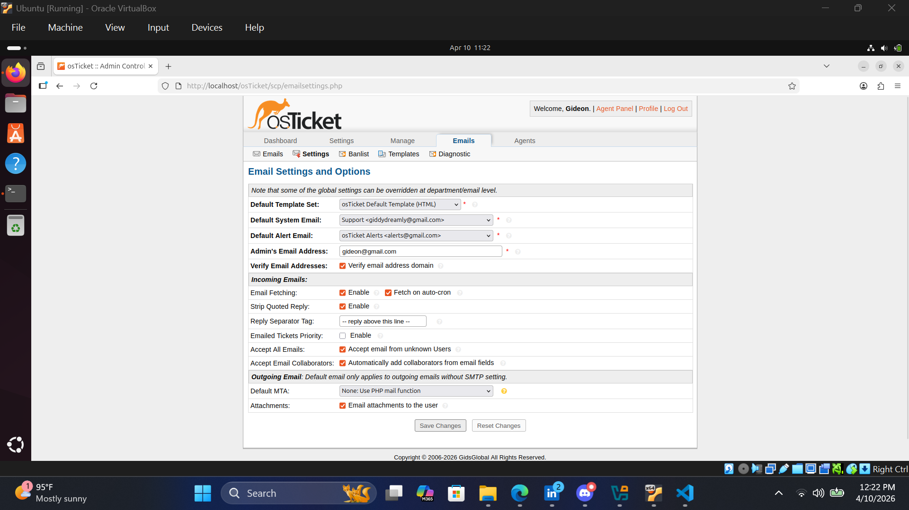
Screenshot: Email Name and Address Configuration
Configuration of the email name and address for outgoing and incoming emails.
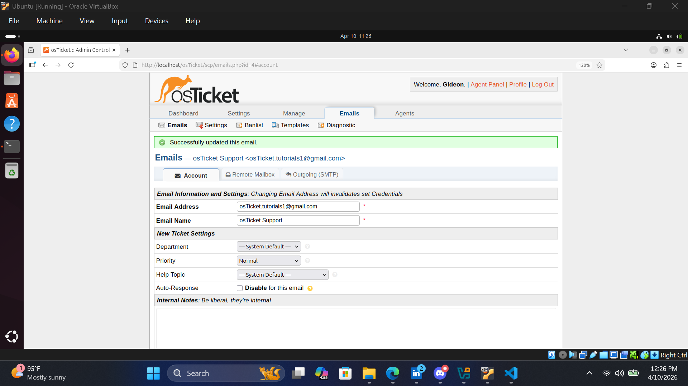
Screenshot: SMTP Configuration
Outgoing email setup using SMTP settings.
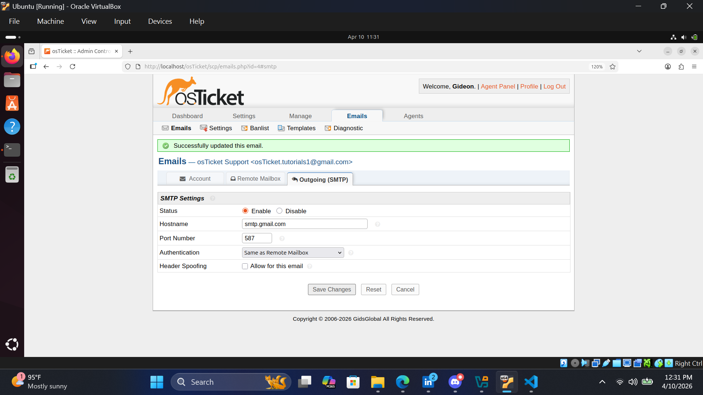
Screenshot: Remote Box or Incoming Email Setup (IMAP)
IMAP configuration settings.
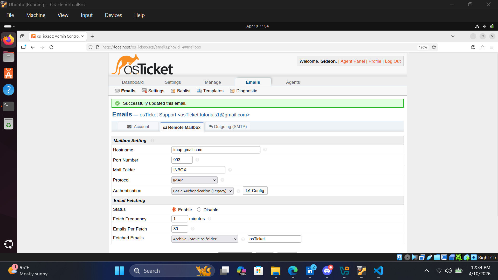
Screenshot: Outgoing Email Test Success
Confirmation message after successful email test.
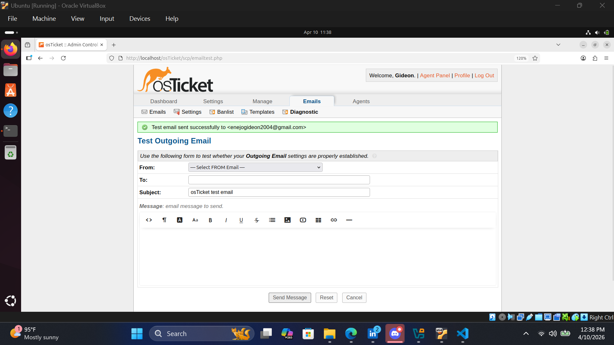
Screenshot: Sent Email Viewed From End User
The email received by the end user after sending a test email from the admin panel.
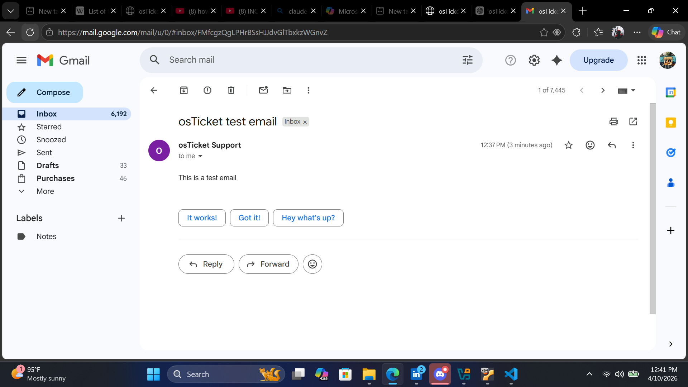
Screenshot:Test Incoming Emails in osTicket
After receiving the test email, I replyed to it to verify that osTicket correctly fetches incoming emails it would create a ticket.
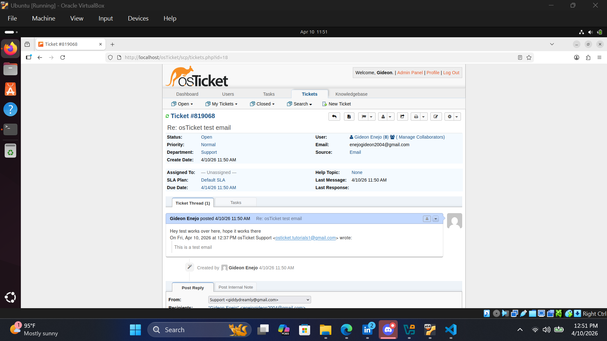
Service Level Agreement (SLA) Setup
SLAs define response and resolution time targets for tickets. This is essential for tracking helpdesk performance and meeting customer expectations.
Create SLA Plans
Define response and resolution time targets
Access SLA Settings
Navigate to: Manage → SLA → Add New SLA Plan
Common SLA Plan Examples
Here are typical SLA configurations for different ticket priorities:
| SLA Name | Grace Period | Schedule | Priority use |
|---|---|---|---|
| Critical | 2 hours | 24/7 | High/Critical |
| High Priority | 4 hours | 24/5 | High |
| Standard | 24 hours | Business Hours | Medium |
Creating an SLA Plan
When adding a new SLA, fill in these fields:
- Name: Descriptive name (e.g., "Critical Issues")
- Status: Mark as Active when ready
- Grace Period: Time before SLA counting starts (e.g., 0 hours for immediate)
- Schedule: Expected resolution and response time (in hours)
- Transient Whether to override existing SLA times
- Ticket Overdue Alerts: To disable overdue alerts notices. (either ticket transfer or help topic change )
Screenshots: SLA Configuration (osTicket)
The following sections show individual SLA plan configurations in osTicket, including grace period, schedule, and priority definitions.
Critical SLA Configuration
Used for system outages and security incidents requiring immediate response.
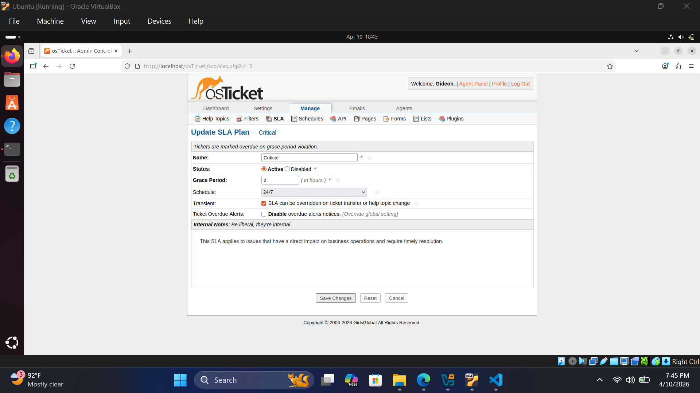
High Priority SLA Configuration
Used for major functionality issues affecting business operations.
.png)
Standard SLA Configuration
Used for normal support requests and general service issues.
All SLA Configurations
List of all SLA configurations.
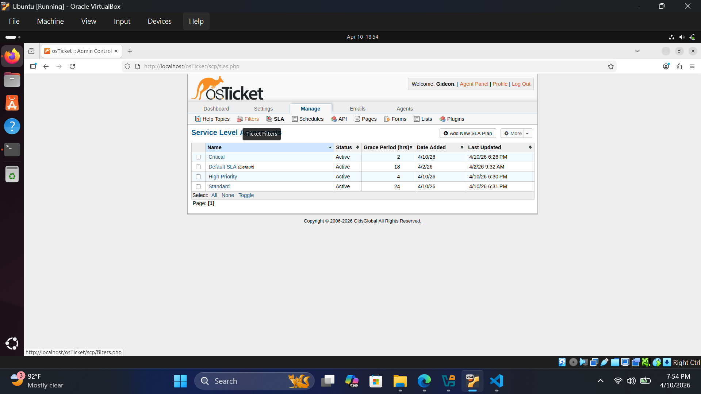
Schedule Configuration
Define working hours and holidays for SLA calculations.
Departments & Teams
Organize helpdesk operations using departments and teams to ensure proper ticket routing, workload distribution, and structured support management in osTicket.
Create Departments
Set up structured support departments in osTicket
Access Department Settings
Navigate to Admin Panel → Agents → Departments → Add New Department
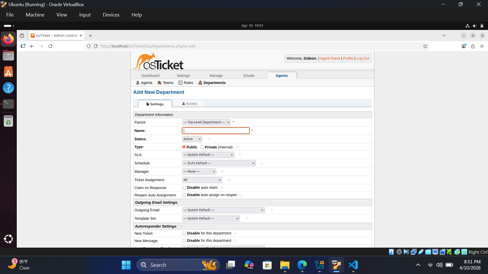
Department Creation Form
Example of creating a new department and configuring email, SLA, and assignment rules.
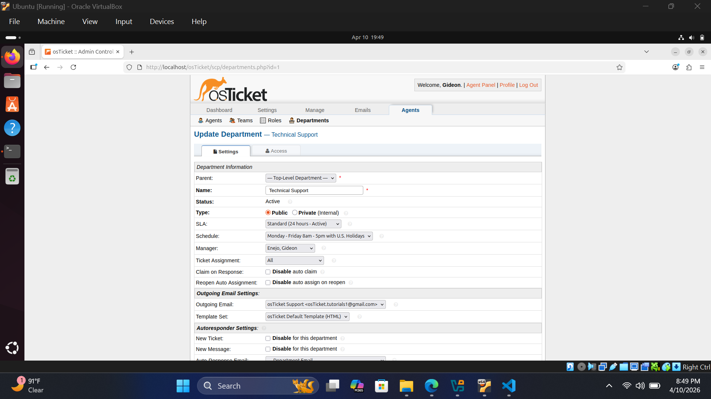
Departments Overview
List of all configured departments including SLA assignment and email routing.
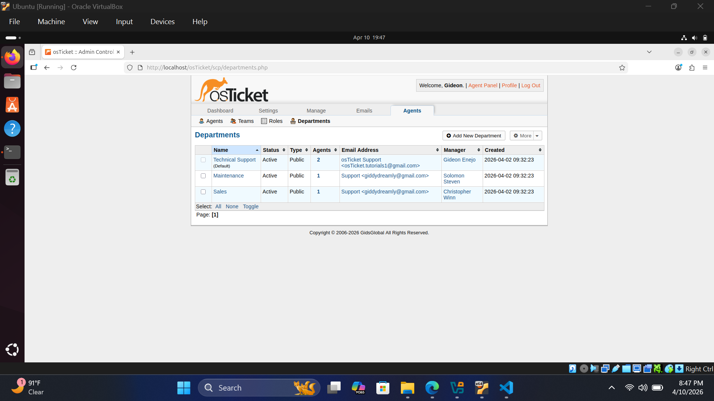
Department Configuration Example
Common department examples for a typical organization:
| Department | Outgoing Email | Manager | SLA | Schedule | Ticket Assignment |
|---|---|---|---|---|---|
| Technical Support | osTicket.tutorials1@gmail.com | Enejo, Gideon | Critical | 24/7 | Department Members only |
| Maintenance | giddydreamly@gmail.com | Solomon Steven | Standard | 24/5 | Department Members only |
| Sales | sales@gmail.com | Sales Manager | High Priority | Mon–Fri (8am–5pm + US Holidays) | Department Members only |
Assign Agents to Departments
Manage staff roles and ticket ownership
Add New Agent
Creating a new agent account with department assignment and role configuration.
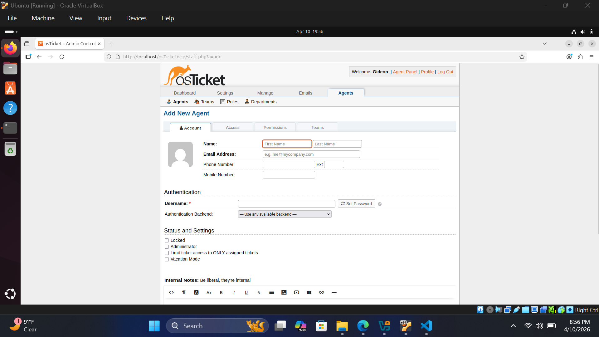
Agent Department Assignment
Assigning agents to departments and defining their access levels and responsibilities.
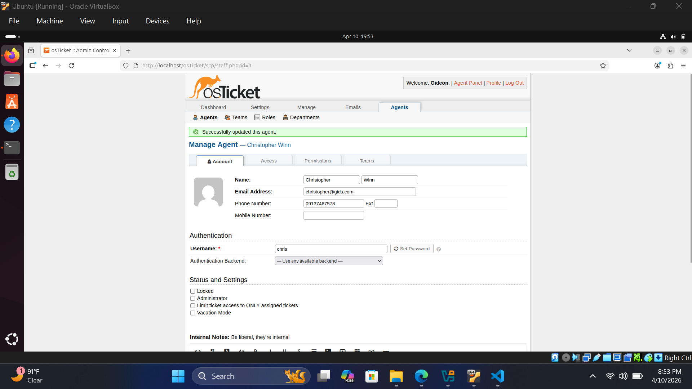
Staff Roles Explained
| Role | Responsibilities | Permissions |
|---|---|---|
| Agent | Handle assigned tickets | View/respond to own tickets |
| Manager | Oversee department operations | Manage tickets and agents |
| Admin | Full system control | All settings and configurations |
Summary Explanation
In osTicket, departments are used to organize support teams based on function (e.g., Technical Support, Sales, Maintenance). Each department can have its own email, SLA plan, and ticket routing rules.
Agents are assigned to departments based on their role and responsibility. This ensures that tickets are automatically routed to the correct team and handled by the appropriate staff members.
This structure improves workflow efficiency, ensures proper escalation, and allows SLA policies to be applied correctly based on department needs and business priority.
General System Settings
This section covers the core system configuration settings in osTicket, including helpdesk identity, security options, localization, and attachment handling. These settings define how the helpdesk behaves globally.
General Settings Overview
- Helpdesk Status: Online or Offline mode for system availability
- Helpdesk URL: Base URL used for system access and email links
- Helpdesk Name: Display name of your support system
- Default Department: Department assigned to unclassified tickets
- Force HTTPS: Enforces secure HTTPS connections for all requests
- Collision Avoidance Duration: Prevents multiple agents editing same ticket (minutes)
- Default Page Size: Number of records displayed per page
- Default Log Level: Controls system logging verbosity
- Purge Logs: Automatically deletes old system logs
- Show Avatars: Displays user avatars in ticket threads
- Enable Rich Text: Allows HTML formatting in tickets and emails
- Allow System iFrame: Enables embedding osTicket in external pages
- Embedded Domain Whitelist: Allowed domains for iframe embedding
- ACL (Access Control): Defines system access rules
Date and Time Configuration
- Default Locale: System language and regional format
- Default Time Zone: Ensures correct time tracking for tickets
- Date Format: Example: 4/10/26
- Time Format: Example: 8:04 PM
- Date & Time Format: Example: 4/10/26 8:04 PM
- Full Format: Example: Friday, April 10, 2026 at 8:04 PM
- Default Schedule: Defines business hours used for SLA calculations
System Languages
- Primary Language: Main system language used in interface
- Secondary Languages: Additional supported languages for users
Attachments Storage and Settings
- Store Attachments: Defines where uploaded files are stored (database or filesystem)
- Agent Maximum File Size: Limits file upload size per agent
- Login Required: Restricts attachment access to authenticated users only
Final Verification Checklist
- ✓ Email sending (SMTP) configured and tested
- ✓ Email fetching (IMAP) configured and working
- ✓ SLA plans created (Critical, High, Standard, Low)
- ✓ Departments created and assigned correctly
- ✓ Agents added and mapped to departments
- ✓ Routing rules configured for ticket distribution
- ✓ Business hours and schedules configured
- ✓ System timezone and locale set correctly
- ✓ Test ticket created and resolved successfully
Screenshots: System Settings Configuration
The following screenshot show key system settings configured in osTicket, including general settings, localization, and attachment configuration.
General Settings
Configuration of helpdesk name, URL, default department, and system behavior settings.
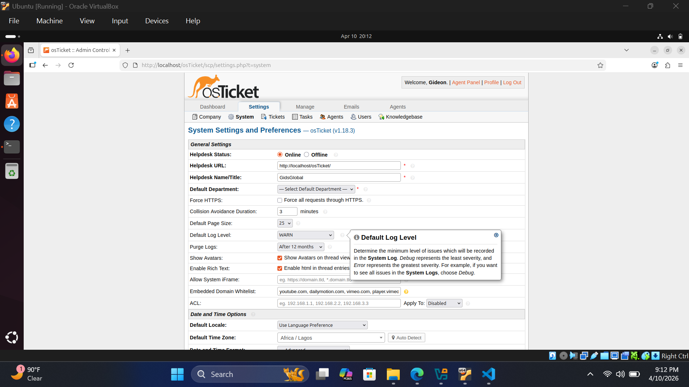